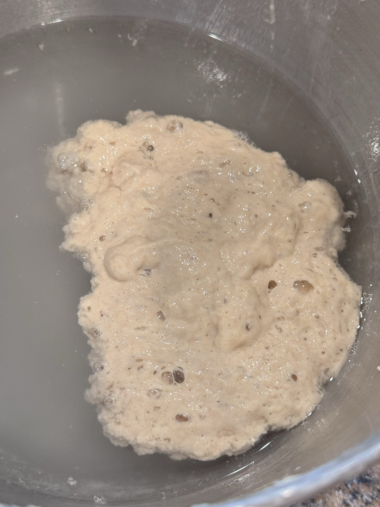

01
The levain
It all starts with a starter — a living culture of wild yeast and bacteria we've been feeding for years. The evening before each bake, a portion is refreshed with fresh flour and water and left to double overnight.
No commercial yeast, ever. This is what gives our bread its tang, depth, and digestibility.
~12 hours